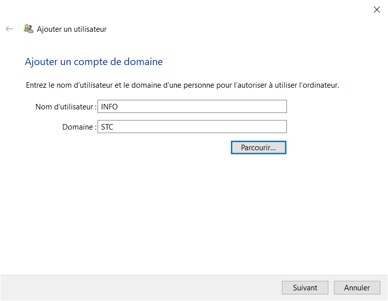

Configuration réseau pour un nouveau site
Ce projet a consisté à gérer un projet d'infrastructure réseau d'A à Z. Suite à une réorganisation de la médiathèque tout le système réseaux a dû être rénové
Les 5 Phases du déploiement de l'infrastructure informatique et des réseaux :
- Installation serveur Webkiosk
- Installation des PC
- Branchement et configuration du matériel réseau (routeur, switch, etc.)
- Configuration Antenne WIFI
- Configuration imprimante
Contexte et Compétences mises en oeuvre
Contexte de ce Projet:
La médiathèque a subi une réorganisation nécessitant une modernisation de son infrastructure réseau pour répondre aux besoins croissants de ses usagers. Le projet vise à fournir un environnement informatique robuste et sécurisé, facilitant l'accès aux ressources en ligne et garantissant une expérience utilisateur optimale.
L’organisation de projet:
- Moyens et Techniques :
- Utilisation de commutateurs réseau pour interconnecter les différents appareils et segments du réseau.
- Utilisation d'un Raspberry Pi comme serveur Webkiosk pour permettre une navigation Internet contrôlée et sécurisée.
- Installation et configuration d'antennes WiFi pour fournir une connectivité sans fil à la médiathèque.
- Référentiels et Directives :
- La normalisation de l'installation en respectant une procédure de configuration
- L'absence de service actif dans le bâtiment oblige la complexification des tests pour éviter tout problème le jour de réouverture.
Compétences Mises en Œuvre :
- Gestion de Projet : Planification et coordination des différentes phases du projet, allocation des ressources et suivi des délais pour assurer le bon déroulement de la rénovation de l'infrastructure réseau de la médiathèque.
- Configuration et Maintenance des Réseaux : Installation, configuration et maintenance des équipements réseau tels que les commutateurs, les routeurs et les antennes WiFi, en veillant à assurer une connectivité fiable et sécurisée pour les utilisateurs.
- Test et Validation : Réalisation de tests approfondis pour garantir le bon fonctionnement de l'ensemble de l'infrastructure réseau, y compris les serveurs Webkiosk, les PCs, les réseaux câblés et sans fil, ainsi que les imprimantes, afin de s'assurer de la conformité aux exigences et aux normes de qualité.
Ce projet de rénovation de l'infrastructure réseau de la médiathèque a été mené avec succès grâce à une gestion efficace du projet, assurant la planification, l'allocation des ressources et le suivi des délais.
1. Installation serveur Webkiosk
WEBKIOSK est un outil numérique utilisé principalement dans les écoles et les bibliothèques pour accéder et gérer des ressources en ligne de manière sécurisée. Il permet une navigation Internet contrôlée, un accès facile à diverses bases de données et ressources électroniques, tout en offrant des options de personnalisation et de suivi pour les administrateurs.
Serveur Webkiosk
Le serveur Webkiosk et un raspberry pi. La configuration du serveur webkiosk et d'impression on directment été configurer par la sociéter.
De notre coter il nous reste plus qu'a le relier à notre réseau EPN(public) puis pour les antennes en faire re sortir un autre sous-réseau d'une autre carte.
Pour finir en sortie du nouveau réseau on rajoute un switch qui va nous servir à connecter toutes les antennes WIFI (Webkiosk)
2. Installation des PC
PC dans notre domaine (les agents mairie)
Après la mise en route du PC plusieurs points importants sont à faire avant de le donner à un agent:
- Créer un compte local sur le PC pour le service informatique
- Lui changer son nom et se référer à la liste de nos appareils
-
Joindre le PC dans le domaine
-
Ajouter un compte admin du domaine

-
Installer les applications et logiciel métier
- Pour finir venir le mettre dans le bon groupe de l'AD
PC hors domaine (Public)
- Créer un compte local sur le PC pour le service informatique
- Lui changer son nom par rapport au site où il est installé
- Installer les applications et logiciel métier
- Pour finir soit le mettre en mode kios pour la consultation des catalogues de la médiathèque soit installer un programme appeler "Webkiosk" pour la gestion des postes publics
3. Configuration du matériel réseaux
Réseaux
Dans la Mairie les réseaux Mairie et Public sont 2 réseaux séparer physiquement pour ce nouveau site j'ai décidé de les réunir sur un seul switch séparer par de VLAN comme représenter sur le schéma.

Switch
Ensuite les switchs sont configuré sur les réseaux mairie:
- Modifier IP sur une plage réservée
- Rajout sur la topology réseaux
De plus avec une nouvelle politique que j'ai mise en place sur les switchs qui sont de:
- Rajouter 802.1x
- Modification des mots de passes robuste
- Mise à jours des switch
- Passage en SNMPv3
- Mise en place de VLAN sur chaque port
Brasage
Pour finir relier chaque noeud du bandeau à un port avec le bon VLAN
4. Configuration Antenne WIFI
Antenne Wifi STC (Mairie)
Les antennes wifi du personnel son pré configuré par notre fournisseur il ne reste plus qu'à les brancher sur notre réseau avec le VLAN Antenne.
Antenne Wifi Webkiosk (Public)
Les antennes Webkiosk sont connectées au serveur webkiosk en amont
Pour configurer les antennes il suffit de :
- Se connecter sur l'antenne via l'IP par défaut (192.168.1.2) puis la modifier
- Changer son mdp et son SSID (Webkiosk)
- Pour finir lui affecter une IP fixe
Il faut ensuite enlever les securité de la borne afin qu’elle ne demande pas de mdp à la connexion puisque c’est webkiosk qui s’occupe de l’authentification
Les pc qui se connectent au wifi webkiosk adoptent une IP 192.168.30.xxx
5. Configuration imprimente
Imprimente STC (Mairie)
Pour connecter les nouvelles imprimante à notre réseau il suffit de:
- Lui affecter un IP fixe qui doit être dans la range des IP réservé pour les imprimantes.
- L'enregistrer dans notre inventaire
-
Puis la connecter à notre serveur d'impression dans gestion de l'impression -> Ajouter imprimante -> TCP/IP -> Ajouter lIP comme sur la photo
Imprimente Webkiosk (Public)
- Lui affecter un IP fixe qui est dans le bon sous-réseau
- Se connecter au serveur d'impression de Webkiosk pour la rajouter
-
Puis la rajouter aussi dans l'interface graphique de webkiosk qui permettra de la distribuer aux utilisateurs publics
6. Test de fonctionnement
Pour garantir le bon fonctionnement du système, effectuez les tests suivants :
Serveur Webkiosk :
- Vérifiez la connectivité des PCs, les performances et la gestion des requêtes utilisateurs.
PCs :
- Domaine Mairie : Confirmez l'intégration au domaine, la fonctionnalité des comptes et des applications métiers.
- Hors Domaine : Assurez-vous du bon fonctionnement en mode kiosque ou avec Webkiosk.
Réseau :
- Testez la connectivité, la configuration des VLAN et la sécurité des switchs.
WiFi :
- STC Mairie : Vérifiez la connexion stable et sécurisée pour le personnel.
- Webkiosk Public : Testez l'accès et l'authentification au réseau Webkiosk.
Imprimantes :
- STC Mairie : Assurez-vous de la connexion au réseau et du bon fonctionnement d'impression.
- Webkiosk Public : Vérifiez l'accessibilité et la fonctionnalité pour les utilisateurs publics.
Un test de charge globale pour simuler l'usage quotidien est également recommandé.